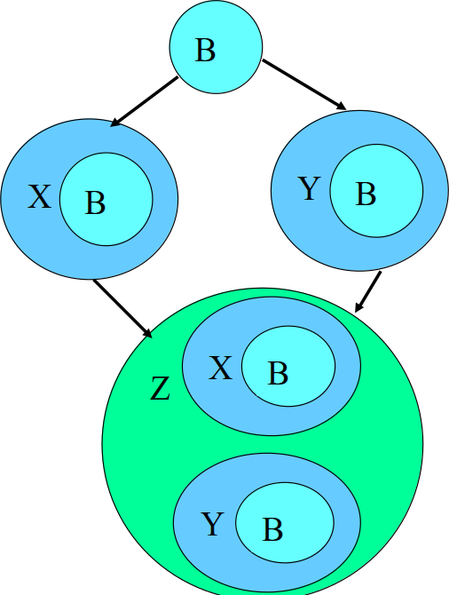
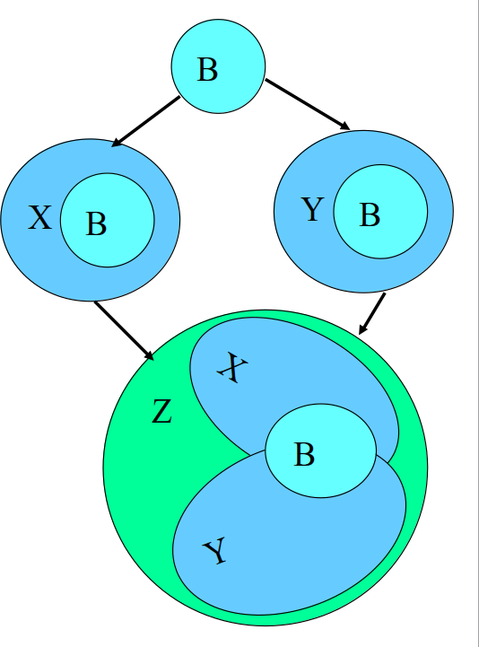

Created: 2018-01-17 ср 12:24
C++ as four sub-languages
0: #include <iostream> //header we always include 1: #include "awesomeclass1.h" 2: #include "awesomeclass2.h" 3: #include "awesomeclass3.h" // our own class headers 4: 5: int main() 6: { 7: awesomeclass1 ac; 8: awesomeclass2 ac2; 9: awesomeclass3 ac3; 10: 11: ac.do_something(ac2); 12: 13: ac3 = ac; 14: 15: return 0; 16: }
0: // x.h 1: class x { . . . }; 2: 3: // a.h 4: class a { X x . . . }; 5: 6: // b.h 7: class b { X x . . . }; 8: 9: // source.cpp 10: #include "a.h" // include x.h for the first time 11: #include "b.h" // error! include x.h again!
0: // x.h 1: #ifndef __X_H_INCLUDED__ 2: #define __X_H_INCLUDED__ 3: 4: class x { . . . }; 5: 6: #endif
0: // declarations 1: extern int a; 2: extern char b; 3: class foo; // extern not allowed for user types 4: double sum(double, int); // no need for extern 5: 6: // definitions 7: int a; // the implementation of a 8: char c; // the implementation of c 9: double div(double a, int x) { return a / x; } 10: class foo { . . . };
class A > (uses) > class B
B* b;B MyFunction(B myb);#include "b.h" if: B is a parent class of A#include "b.h" if: A contains a B object: B b;0: #ifndef __MY_CLASS_H_INCLUDED__ 1: #define __MY_CLASS_H_INCLUDED__ 2: 3: // Forward declare dependencies 4: class F; 5: class B; 6: 7: // Include dependencies 8: #include <map> 9: #include "c.h" 10: 11: // Our current class 12: class MyClass : public c 13: { 14: public: 15: std::map<int, char> matrix; // a map object that is required by our class 16: F* f; // F pointer, so forward declare F 17: void Func(B& b); // B reference, so forward declare B 18: 19: friend class MyFriend; // friend declaration is not a dependency 20: // don't do anything about MyFriend 21: } 22: #endif
0: // b.h 1: #include "a.h" 2: class B { A* a; }; 3: 4: // a.h 5: #include "b.h" 6: class B { B* b; };
0: class Person 1: { 2: private: // (Used by default if not specified explicitly) No one can see in here 3: int age; 4: 5: std::string name; 6: std::string job; 7: 8: static const Doctor *d; 9: 10: const void wave(); 11: 12: protected: // Can be seen only by class that is a child 13: // Usually we don't have a use case for protected 14: bool is_married; 15: 16: public: // Everyone can see this part 17: Person(); 18: Person(std::string name); 19: ~Person(); 20: 21: std::string get_name(); 22: std::string get_job(); 23: int get_age(); 24: 25: double calculate_salary(); 26: 27: bool get_occupation() { return is_married; } // implicit inline function 28: };
0: class Library 1: { 2: public: 3: Library(const std::string& name, const std::list<Books>& books); 4: private: 5: std::string theName; 6: std::list<Books> books; 7: int addressNum; 8: }; 9: 10: Library::Library(const std::string& name, const std::list<Books>& books) 11: // <- Initialization start right here before the opening bracket 12: { 13: theName = name; // these are all assignments 14: theBooks = books; 15: addressNum = 0; 16: } // This is OK but can be done better
Constructor with initialization list
0: Library::Library(const std::string& name, const std::list<Books>& books) 1: : theName(name), // These are all now initialized 2: theBooks(books), 3: addressNum(0) 4: { } // Empty constructor body
0: // in the filesystem.cpp file 1: class FileSystem 2: { 3: public: 4: std::size_t numDisks() const; 5: }; 6: extern FileSystem tfs; 7: 8: // in our .cpp file 9: class Directory 10: { 11: public: 12: Directory(params); 13: }; 14: 15: Directory::Directory(params) 16: { 17: std::size_t disks = tfs.numDisks(); // we use the tfs object, 18: // but we cannot be sure 19: // that it is initialized 20: } 21: 22: Directory tempDir(params);
The solution:
0: FileSystem& tfs() // this replaces the tfs object; it could be 1: { // static in the FileSystem class 2: static FileSystem fs; // define and initialize a local static object 3: return fs; // return a reference to it 4: } 5: 6: class Directory { ... }; 7: // as before 8: Directory::Directory(params) // as before, except references 9: { // to tfs are 10: std::size_t disks = tfs().numDisks(); // now to tfs() 11: } 12: 13: Directory& tempDir() // this replaces the tempDir object; it 14: { // could be static in the Directory class 15: static Directory td( params ); // define/initialize local static object 16: return td; // return reference to it 17: }
0: // Empty class 1: class A {}; 2: 3: // Empty class again 4: class A 5: { 6: public: 7: A() {...} // constructor 8: A(const A& rhs) {...} // copy constructor 9: ~A() {...} // destructor 10: 11: A& operator=(const A& rhs) {...} // copy assingment operator 12: };
0: template<typename T> 1: class NamedObject 2: { 3: public: 4: NamedObject(std::string& name, const T& value); 5: private: 6: std::string& nameValue; 7: const T objectValue; 8: };
0: class AccessLevels 1: { 2: public: 3: int get_read_write() const { return readWrite; } 4: int get_read_only() const { return readOnly; } 5: 6: void set_read_write(int value) { readWrite = value; } 7: void set_write_only(int value) { writeOnly = value; } 8: private: 9: int no_access; // no access to this 10: // (maybe it's used as an internal constant) 11: int read_only; // only read access 12: int read_write; // read and write access 13: int write_only; // write only access 14: };
Use inline functions
0: class Person 1: { 2: public: 3: int age() const { return theAge; } // implicit inline request 4: // defined in class definition 5: friend job() const { return currJob; } // friend functions can 6: // also be inline 7: private: 8: int theAge; 9: }; 10: 11: template<typename T> // an explicit inline 12: inline const T& std::max(const T& a, const T& b) // request: std::max is 13: { return a < b ? b : a; } // preceded by “inline”
0: class Window 1: { 2: public: 3: std::string name() const; // return name of window 4: virtual void display() const; // draw window and contents 5: }; 6: 7: class WindowWithScrollBars: public Window 8: { 9: public: 10: virtual void display() const; 11: }; 12: 13: // the bad functoin 14: void printNameAndDisplay(Window w) // Bad! Parameter might be sliced! 15: { 16: std::cout << w.name(); 17: w.display(); 18: } 19: 20: // the correct function 21: void printNameAndDisplay(const Window& w) // Correct! Parameter won't be sliced! 22: { 23: std::cout << w.name(); 24: w.display(); 25: } 26: 27: // the call 28: WindowWithScrollBars wwsb; 29: printNameAndDisplay(wwsb);
0: class BorrowableItem 1: { 2: public: 3: void checkOut(); 4: }; 5: 6: class ElectronicGadget 7: { 8: private: 9: bool checkOut() const; 10: }; 11: 12: class MP3Player: 13: public BorrowableItem, 14: public ElectronicGadget 15: { . . . }; 16: 17: // in some function 18: MP3Player mp; 19: mp.checkOut(); // ambiguous! a.k.a. problem!

0: class B {. . .}; 1: class X: public B {. . .}; 2: class Y: public B {. . .}; 3: 4: class Z: public X, public Y {. . .}; // Problem! 5: // 2 anonymous instances of B

0: class B {. . .}; 1: class X: virtual public B {. . .}; 2: class Y: virtual public B {. . .}; 3: 4: class Z: public X, public Y {. . .}; // When base class is inherit as 5: // virtual, only anonymous copy in 6: // the child class is created!
0: class TimeKeeper 1: { 2: public: 3: TimeKeeper(); 4: ~TimeKeeper(); 5: }; 6: 7: class AtomicClock: public TimeKeeper { . . . }; 8: class WaterClock: public TimeKeeper { . . . }; 9: class WristWatch: public TimeKeeper { . . . }; 10: 11: // some factory function in some source file 12: TimeKeeper* getTimeKeeper(); // returns a pointer to a dynamic- 13: // ally allocated object of a class 14: // derived from TimeKeeper 15: 16: TimeKeeper *ptk = getTimeKeeper(); // get dynamically 17: // allocated object 18: // from TimeKeeper hierarchy 19: // some code that uses it 20: 21: delete ptk; // release it to avoid resource leak
0: class TimeKeeper 1: { 2: public: 3: TimeKeeper(); 4: virtual ~TimeKeeper(); 5: }; 6: 7: TimeKeeper *ptk = getTimeKeeper(); 8: 9: delete ptk; // now behaves correctly
0: class Person { }; 1: class Student: public Person { };
0: class Bird 1: { 2: public: 3: virtual void fly(); 4: }; 5: 6: class Penguin: public Bird 7: { 8: };
0: class Bird 1: { 2: }; 3: 4: class FlyingBird: public Bird 5: { 6: public: 7: virtual void fly(); 8: }; 9: 10: class Penguin: public Bird 11: { 12: };
0: class Person { . . . }; 1: class Student 2: : private Person { . . . }; // inheritance is now private 3: 4: void eat(const Person& p); // anyone can eat 5: void study(const Student& s); // only students study 6: Person p; // p is a Person 7: Student s; // s is a Student 8: eat(p); // fine, p is a Person 9: eat(s); // error! a Student isn’t a Person